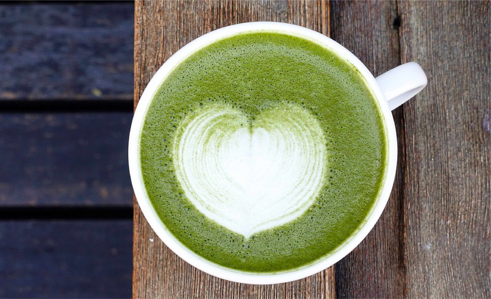
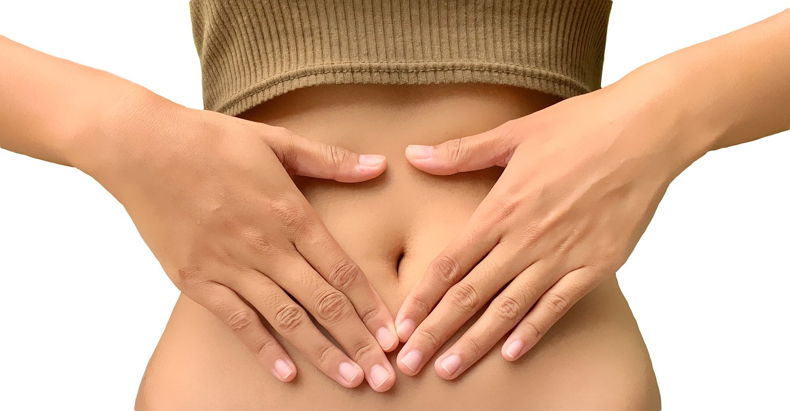

Super Greens Powder: A Comprehensive Guide to Its Benefits for Your Body
Table of Contents
Introduction to Super Greens Powder
Super Greens Powder is a blend of various nutrient-dense green vegetables, superfoods, and herbs. This powdered supplement is designed to help you easily incorporate essential vitamins, minerals, and antioxidants into your daily routine. Whether you're looking to fill nutritional gaps in your diet, boost your immune system, or simply increase your intake of greens, Super Greens Powder is a convenient and effective solution.
Key Ingredients:
- Wheatgrass: Rich in chlorophyll, vitamins A, C, and E.
- Spirulina: A potent source of protein, B vitamins, and iron.
- Chlorella: Known for its detoxifying properties and high antioxidant content.
- Spinach: Packed with vitamins K, A, and folate.
- Broccoli: Contains fiber, vitamin C, and various bioactive compounds.
Immune System Support
One of the most significant benefits of Super Greens Powder is its ability to support and strengthen the immune system. The blend of superfoods in this supplement provides your body with essential nutrients that play a crucial role in immune function.
How It Works:
- Antioxidants: Ingredients like spirulina and chlorella are rich in antioxidants, which help protect your cells from oxidative stress and free radicals.
- Vitamin C: Found in high concentrations in broccoli and spinach, vitamin C is vital for the production of white blood cells, which are crucial for fighting infections.
- Zinc and Selenium: These trace minerals, present in many greens, are known to boost immune response and reduce the duration of illnesses.
Tip: Regular consumption of Super Greens Powder can help you stay healthier during flu season and other times of the year when your immune system might be compromised.
Digestive Health and Detoxification
Super Greens Powder is also beneficial for digestive health and detoxification. Many of the ingredients in this supplement support gut health and aid in the removal of toxins from the body.
Key Benefits:
- Fiber Content: Ingredients like spinach and broccoli are excellent sources of dietary fiber, which aids in digestion and promotes regular bowel movements.
- Chlorophyll: Found in high amounts in wheatgrass and chlorella, chlorophyll has detoxifying properties that help cleanse the liver and blood.
- Probiotics: Some Super Greens Powders include added probiotics, which support a healthy gut microbiome, improving digestion and nutrient absorption.
Tip: For best results, take your Super Greens Powder on an empty stomach in the morning to kickstart your digestion and detoxification processes.
Energy Boost and Mental Clarity

If you're looking for a natural way to boost your energy levels and improve mental clarity, Super Greens Powder can be a powerful ally. The combination of essential nutrients, antioxidants, and chlorophyll helps to fuel your body and mind.
How It Helps:
- Natural Energy Source: The vitamins and minerals in Super Greens Powder, particularly B vitamins, help convert food into energy, providing a steady supply of fuel throughout the day.
- Mental Clarity: Ingredients like spirulina are known to support brain health and improve cognitive function, making you feel more alert and focused.
- Reduced Fatigue: The detoxifying properties of chlorophyll help reduce the buildup of toxins that can cause fatigue and sluggishness.
Tip: Incorporate Super Greens Powder into your morning smoothie or juice for a sustained energy boost throughout the day.
Skin Health and Anti-Aging Benefits
Super Greens Powder isn't just good for your internal health; it also has visible benefits for your skin. The high concentration of antioxidants, vitamins, and minerals in this supplement helps to support skin health and fight the signs of aging.
Benefits for Your Skin:
- Anti-Aging: Antioxidants like vitamin C and E, found in abundance in greens, protect your skin from oxidative stress, which can cause wrinkles and fine lines.
- Hydration: Ingredients like spirulina help maintain skin hydration, giving you a healthy, youthful glow.
- Collagen Production: The vitamin C in Super Greens Powder supports collagen production, which is essential for maintaining skin elasticity and reducing wrinkles.
Tip: Consistent use of Super Greens Powder, along with a healthy diet and skincare routine, can significantly improve your skin's appearance over time.
Conclusion and Recommendations
Super Greens Powder is a versatile and powerful supplement that offers a wide range of benefits for your body, from boosting your immune system to improving your skin's appearance. To get the most out of this supplement, consider adding it to your daily routine in smoothies, juices, or simply mixed with water.
Recommendations:
- Choose a High-Quality Product: Look for Super Greens Powders that are organic, non-GMO, and free from artificial additives.
- Start Small: If you're new to Super Greens Powder, start with a small serving and gradually increase to the recommended dosage.
- Combine with a Healthy Lifestyle: For the best results, use Super Greens Powder as part of a balanced diet and regular exercise routine.